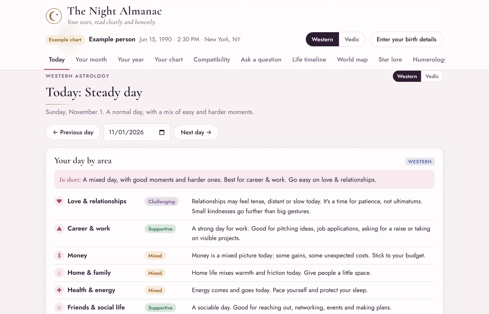

Today, this month, this year
Forecasts for the parts of life you care about
Each day, week and year is rated area by area, with a short reason for each.
- Love, career, money, home, health and friends
- The Moon's phase and sign, retrogrades and what's touching your chart
- Step forward or back to plan around any date
